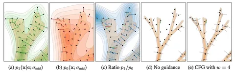

Сегодня делимся обзором четырёх работ, в которых генерацию улучшают, отталкиваясь от специально испорченного предсказания. Посмотрим на разные методы такой «порчи» и полученные результаты.
Guiding a Diffusion Model with a Bad Version of Itself
Для начала вспомним CFG (Classifier-free guidance). При обучении модели в части случаев (скажем, 10%) подаётся пустой кондишн. При сэмплировании получают conditional- и unconditional-предсказания и экстраполируют от второго в сторону первого.
CFG улучшает качество и соответствие условию, но при этом снижает разнообразие генераций. Авторы предлагают метод Autoguidance — вместо unconditional-предсказания берут предсказание ухудшенной версии той же conditional-модели, например, недообученной или уменьшенной.
И тут надо понять, как именно должна быть ухудшена вторая модель. В аблейшнах авторы сравнивают разные варианты.
• Если обе ветки ухудшены одним способом, но с разной силой, экстраполяция может компенсировать ухудшение (например, для моделей с постфактум добавленным дропаутом разной силы FID удалось снизить с 5 до 2,55 — практически до уровня исходной модели с FID 2,56).
• Если же характер ошибок различается — например, одна ветка испорчена дропаутом, а другая шумом — guidance не помогает, лучший FID получается при scale = 1, то есть без экстраполяции.
Основная идея Autoguidance в том, что плохая модель должна делать ошибки того же характера, что и хорошая, только сильнее.
Self-Rectifying Diffusion Sampling with Perturbed-Attention Guidance
Авторы заходят с чуть другой стороны и предлагают метод PAG (Perturbed-Attention Guidance). В одном или нескольких аттеншн-блоках строят ухудшенное предсказание, заменяя attention map на единичную матрицу. Получается, что каждый токен смотрит только на себя — и пространственное взаимодействие между токенами в этом блоке пропадает. При генерации отталкиваются от этого ухудшенного предсказания.
В эксперименте на Stable Diffusion 1.5 PAG дал более низкий FID, чем CFG. При этом методы можно сочетать, и вместе они показывают ещё более высокое качество.
Stochastic Self-Guidance for Training-Free Enhancement of Diffusion Models
Здесь плохое предсказание получают за счёт того, что на каждом шаге диффузии случайно выбирают 10% трансформер-блоков и пропускают их. При попытке реализовать этот метод мы столкнулись с тем при дропе трансформер-блоков на изображениях действительно появлялось больше деталей. Но одновременно картинки становились заметно более тусклыми, хотя авторы такого эффекта не упоминают. Код они пообещали выложить, но пока его нет. Хотелось бы посмотреть на реализацию авторов.
Guiding a Diffusion Model by Swapping Its Tokens
Получают плохое предсказание с помощью перестановки самых непохожих токенов в отдельных блоках модели. Авторы предлагают два варианта: перемешивать сами токены или их каналы. Первый не дал заметного прироста, а с увеличением скейла качество генераций ухудшалось. Перемешивание каналов оказалось ещё нестабильнее, и даже при небольшом скейле изображения разваливались.
Во всех этих методах критичным оказывается выбор способа построения ухудшенного предсказания. Само по себе более сильное искажение не делает guidance эффективнее: если оно слишком сильно меняет структуру предсказания или вносит ошибки не в тех местах, где ошибается основная модель, качество генерации быстро падает.
Разбор подготовил
CV Time
